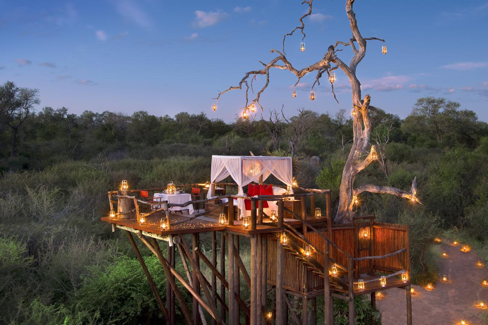

TRAVEL GURU
Featured Adventure
Featured Adventure
This is the place to find the top 5 places to travel when it comes to Adventure, Cruise, Romance, or Volunteer opportunities.
Our team has scowered the internet to compiled the top five attractions for you to experience on your next vacation. Visit our featured pages below to help you pick where to create your next travel memories. We have Adventure, where you can find thrill seeking activities from sky, water, and land. Find your next cruise from the best activity, cruise lines, ports, destination, and helpful tips. Share a romantic getaway and find where to experience our choice in the top five dinner, resort, and hiking locations. Give back by findind the best place to spend your time off by volunteering for animals, community, and land conservation.
Our team has scowered the internet to compiled the top five attractions for you to experience on your next vacation. Visit our featured pages below to help you pick where to create your next travel memories. We have Adventure, where you can find thrill seeking activities from sky, water, and land. Find your next cruise from the best activity, cruise lines, ports, destination, and helpful tips. Share a romantic getaway and find where to experience our choice in the top five dinner, resort, and hiking locations. Give back by findind the best place to spend your time off by volunteering for animals, community, and land conservation.
Featured Adventure
Like adventure? You’ll love these exilerating items we have compiled for you.
These adventures will surely have you living life on the edge. Whether you like
to try up high, deep down underwater, or dry on land, we got just what you are looking for.
Featured Cruises
Love cruises or thinking of experiensing your first? Check out our list of the top 5 cruises
worth taking a trip on. This list is a fun collection of types of cruises to try. Or maybe you
want to experience another part of the world by sea? Check out what we put together for you.
Featured Romantic

Experience these top five places around the world to dine, rest, and hike with the person you share this
life journey with,
Here you will find some of the best places to getway with your main squeeze, Whether you both enjoy an
unreal dinning experience, an out of this world resort stay, or a romantic hike, you’ll find just
that in with our curated list.
Featured Volunteer
This nine-day service trip offers you the chance to travel across the Western Highlands of Guatemala to
deliver much–needed textbooks, inaugurate brand new computer centers, and interact with students, teachers,
and families who benefit from CoEd programs! You’ll learn about Guatemalan history and culture while getting to know your fellow volunteers from around the world.